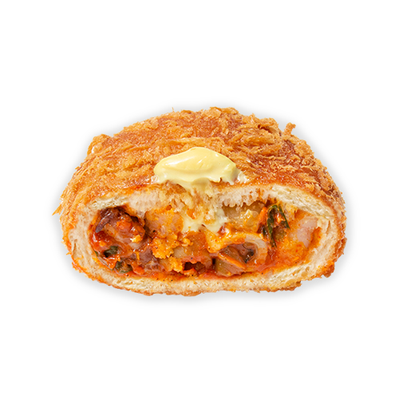

1/2
새우를낙지
새우와 낙지의 매콤한 변신 [새우를낙지]
쫄깃한 낙지와 통통한 새우가 매콤하게 만난 새우를낙지 고로게. 새우와 낙지를 양파, 당근, 대파, 숙주와 함께 넣고 버무린 담백 쫄깃한 고로게. 머리가 띵해질 정도로 매콤한 소스와 달큰한 머스타드 소스의 꿀조합! 한입 베어물면 시원한 맥주가 절로 생각나는 최고의 안주빵 입니다.
3,000원
유통기한
보관방법
배송비
사이즈
당일섭취 권장상품
직사광선을 피하고 서늘한 곳 보관
선불 3000원
8 * 9
같은 카테고리 인기 제품
알레르기정보
밀, 우유, 난류(가금류), 새우, 오징어 함유/본 제품은 난류(가금류), 우유, 메밀, 아황산류, 대두, 토마토, 호두, 땅콩, 닭고기, 쇠고기, 밀, 새우, 돼지고기, 오징어, 잣을 사용한 제품과 같은 시설에서 제조하고 있습니다.
성분표시
중력(미국/호주) 새우(베트남) 낙지(태국)